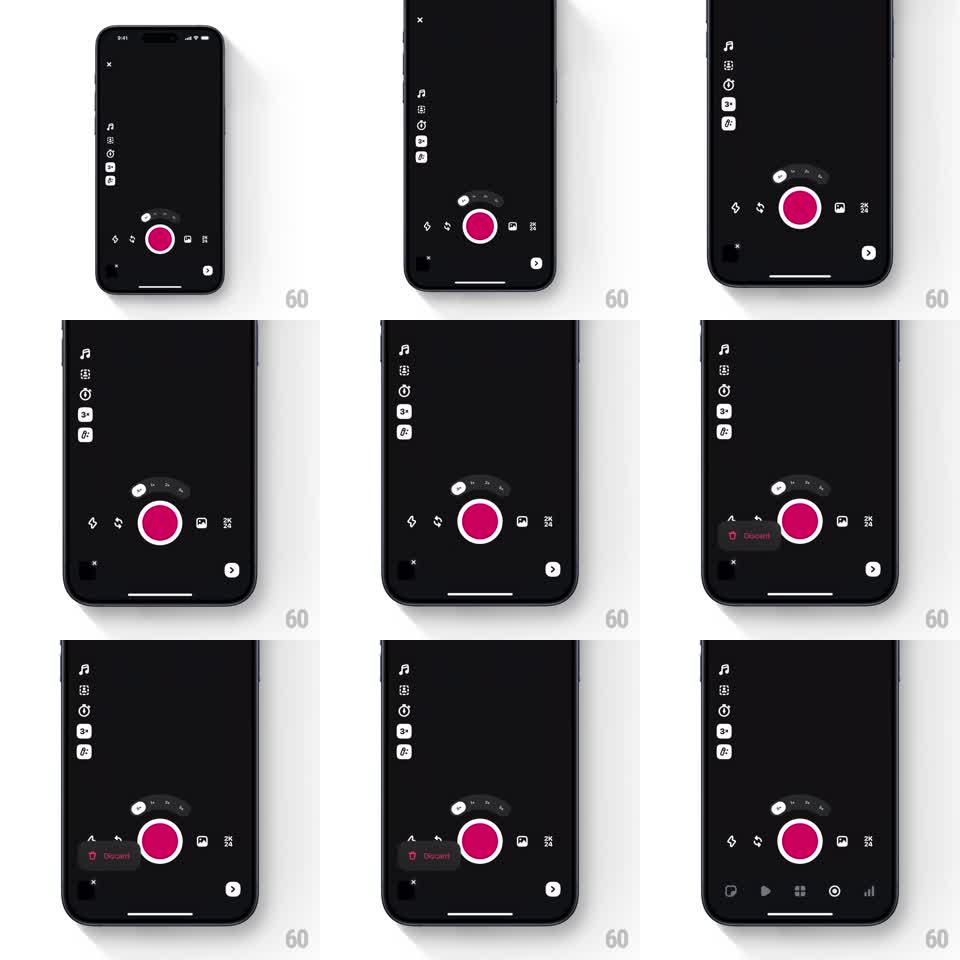

Media
Frame-by-frame

Rebuild this interaction 1:1: the Edits camera discard control - on the dark camera screen, tapping the small close control near the pink record button expands a springy "Discard" pill menu with a trash icon; the pill collapses back to the compact control when dismissed.

Rebuild this interaction 1:1: the Edits camera discard control - on the dark camera screen, tapping the small close control near the pink record button expands a springy "Discard" pill menu with a trash icon; the pill collapses back to the compact control when dismissed.
## Integration
Integration: stack-agnostic spec - springs given as stiffness/damping, timed motions as duration + curve; map every value to your framework and animation library of choice.
## Scene
Dark camera UI: a vertical tool rail on the left (music, layout, timer, flash icons), a large pink record button at bottom center with a small mode carousel above it ("LIVE / CAM"), a thumbnail bottom-left, and a next arrow bottom-right. Near the record button sits a small dark close/discard control that expands into a pill labeled "Discard" with a trash icon.
## Motion spec
Pattern: expanding discard pill from a compact button.
- Tap the control: it expands horizontally into a pill (width 44pt -> ~120pt, spring ~320/18), the trash icon fading in with the "Discard" label (150ms, 50ms into the expansion).
- The pill is red-tinted (label and icon in red) against the dark background; the record button scales down slightly (0.95) while the pill is open.
- Tap elsewhere or tap the pill again: it collapses back to the small control (spring ~320/20), label and icon fading out first (120ms).
- While open, the pill pulses subtly (opacity 0.9 -> 1, 1.2s) to hold attention.
## Calibration
- The expansion anchors to its tap point - the pill grows leftward from the control.
- It is a small, precise motion; nothing else on screen moves except the record button's slight scale.
## Reduced motion
The pill crossfades between compact and expanded states (180ms).
## Don't miss
- The discard affordance is red on dark - the only red element besides the record button.
- The pill never covers the record button; it sits to its left.